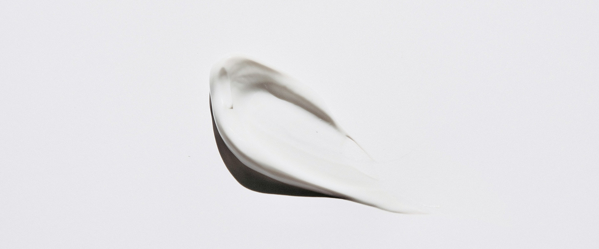

Touch the Moment
은은한 향과 깊은 보습으로 일상에 자연스럽게 스며듭니다.
OUR PHILOSOPHY
오래도록 곁에 남는 감각

Everyday Moments
Allure Era는 일상 속에 은은하게 스며들어,
소소한 순간마다 특별함과 아름다움을 느끼게 하는 경험을 디자인합니다.
Allure Era는 단순히 제품을 제공하지 않습니다. 매일 마주하는 소소한순간 속에서 감각과 경험을 섬세하게 배치합니다. 눈에 보이지 않는 디테일까지 고민하며, 일상의 풍경 속에서 자연스럽게 스며드는 아름다움을 선사합니다. 이렇게 만들어진 순간은 특별하지 않아도, 기억에 오래 남습니다.
우리의 목표는 일상을 바꾸는 것이 아니라, 일상 속의 매 순간을 빛나게 하는 것입니다. 아침 햇살 속 커피 한 잔, 바람에 흩날리는 거리의 풍경까지도 Allure Era의 시선으로 다시 만나게 됩니다. 제품을 넘어선 경험 디자인은 삶의 작은 행복을 발견하게 합니다. 이로써 일상의 소소한 선택도 특별해집니다.
Allure Era의 디자인은 사용자의 삶에 녹아듭니다. 번잡한 일상 속에서도 자연스럽게 존재감을 느끼게 하고, 불필요한 화려함 없이 편안함과 세련됨을 동시에 전달합니다. 경험 그 자체를 즐길 수 있도록, 브랜드는 눈에 띄는 순간보다 스며드는 순간을 더 소중히 여깁니다. 매일의 생활이 은은하게 아름다워지는 방식입니다.